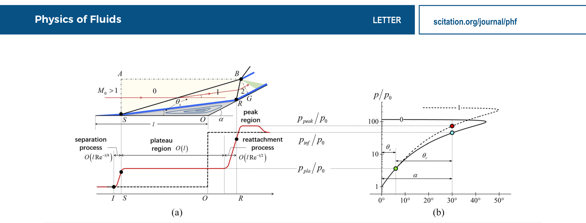
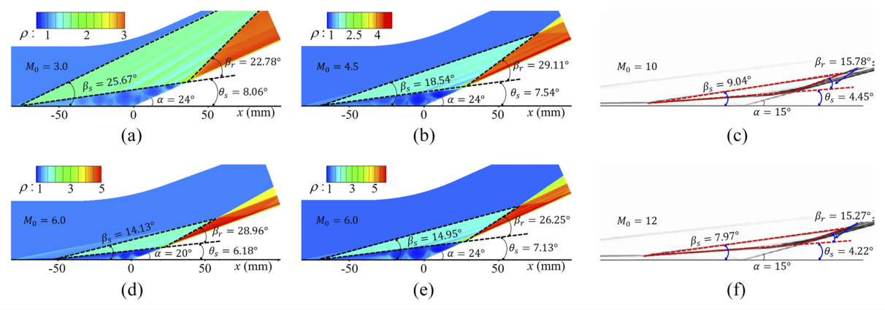
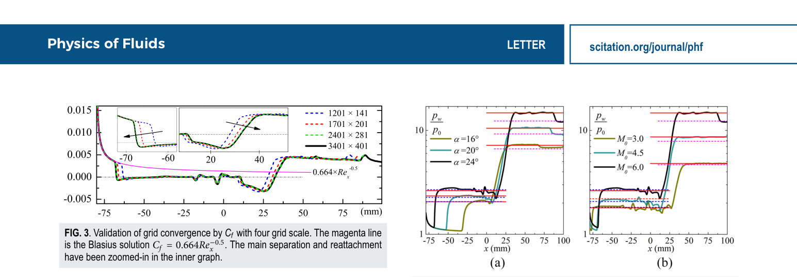
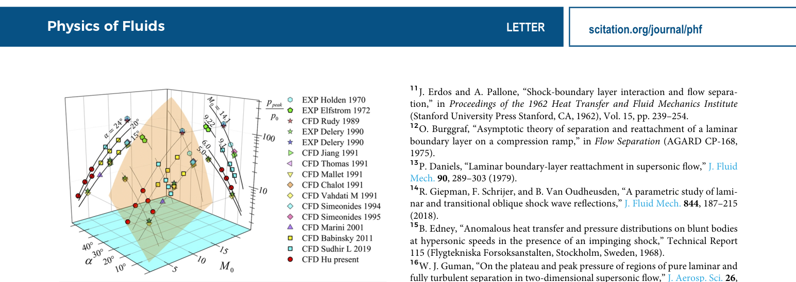

01中文摘要
基于 Helmholtz–Rayleigh 最小耗散定理，提出预测大分离压缩拐角流动（CRFLS）平台压力与再附峰值压力的理论模型。由于该类流动的总耗散主要来自激波，稳态流型可由所有可能构型中激波耗散最小来确定。模型预测在较宽来流马赫数和斜坡角范围内与实验数据及数值模拟吻合，并可推广到其他激波耗散占主导的流动系统。
原始摘要（英文/原文）
Based on the Helmholtz–Rayleigh minimal dissipation theorem, a theoretical model is proposed to predict both the plateau and peak of pressure in a compression ramp flow with large separation (CRFLS). Since the total dissipation of CRFLS is mainly contributed by the shock waves, the steady flow pattern can be determined by minimizing the shock dissipation among all the possible configurations. The predictions agree well with both experimental data and numerical simulations, covering a wide range of free-stream Mach number and ramp angle. This method could be applied to other flow systems where the dissipation is dominated by shock waves.
02阅读说明
文章类型：理论建模（Physics of Fluids Letter，正文 6 页，p.101702-1 至 -6）+ 二维数值验证。材料为带页码全文与图件清单（图 1、3、4、5、6 已抓取；图 2 与表 I 仅有 OCR 文本，未列入抓图清单）。式(1)–(9) 已用 PDF 第 2–4 页逐条核对；α* 定义式、γ 取值及补充材料 Part 1–4 的细节不在材料内，标为“受限于材料，无法确认”。信息完整度：主论证链与验证完整，推导细节依赖补充材料。 文章类型：期刊
03一句话核心与三句话摘要
用最小耗散定理选外流偏转角，统一预测大分离压缩拐角的压力平台与峰值。
- 缺口：自由干扰理论（FIT）只给压力平台、且把平台视为与下游无关，压力峰值缺少与之统一的预测方法。 AI概括
- 方法：假定总耗散由分离激波与再附激波贡献，将三角形分离泡几何与 Rankine–Hugoniot 关系结合，把总耗散写成 θs 的函数并取极小得到唯一稳态 θs，再由 θs 给出 p1（平台）与 p2（峰值），并用 M0=3–6、α=16°–24° 的二维 Open-CFD 模拟验证。 AI概括
- 结果：预测的 θs、βs、βr 与数值密度场/纹影一致，p_pla 与 FIT 及模拟一致，p_peak/p0 与 M0=3.0–14.1、α=15°–38° 的文献数值与实验总体吻合；残余偏差被归因于未建模的 Re 与 Tw 效应。 AI概括
04核心内容清单
| 要点 | 类型 | 重要性 | 原文依据 | 属性 |
|---|---|---|---|---|
| 对每个 (M0, α)，总耗散 Φ/√Ωs 对 θs 只有一个极小值，故 MVD 给出唯一稳态外流偏转角 θs，不引入经验常数。 | 理论结果 | A | 图 2(a)；式(9)；p.101702-3 | 原文明确 |
| 在稳态 θs 下，平台压力 p_pla 等于 p1，峰值压力 p_peak 等于 p2，二者由同一 Rankine–Hugoniot 链同时给出。 | 理论结果 | A | 式(7)；p.101702-4 左栏 | 原文明确 |
| 剪切层与分离泡的耗散相对两支激波可忽略，理由是激波内速度梯度远大于剪切层与泡内梯度（式 3 表明梯度越大耗散越强）。 | 假设/论证 | A | 式(3)(4)；p.101702-2 右栏 | 原文明确 |
| 分离泡面积 Ωs 对所有可能的 θs 取常数（给定 M0、α、Tw），这是使 L_SB、L_RB 仅依赖 θs 的关键先验假设。 | 假设 | A | 式(8) 前文；p.101702-3 左栏 | 原文明确 |
| 稳态 θs 的三种规律：给定 α 时随 M0 减小；小 M0 时随 α 增大；M0=14 在 α>35° 饱和于约 5.7°；M0=20 在临界 α≈26° 处出现 θs≈4° 的峰值后转为下降。 | 定量结果 | A | 图 2(b)；p.101702-3 | 原文明确 |
| p_pla 的理论预测与二维模拟及 FIT 均吻合，覆盖 M0=6、α=16°–24° 与 α=24°、M0=3–6 的全部算例。 | 验证结果 | A | 图 5；p.101702-4 左栏 | 原文明确 |
| p_peak/p0 预测与 M0 从 3.0 到 14.1、α 从 15° 到 38° 的多数数值与实验数据吻合，且高 M0 时 p_peak 可比 p0 高两个量级。 | 验证结果 | A | 图 6；p.101702-4 右栏 | 原文明确 |
| 理论 θs、βs、βr 分别对应剪切层、分离激波、再附激波倾角，与二维密度场及文献纹影一致。 | 验证结果 | B | 图 4；p.101702-4 | 原文明确 |
| 数值方法自检：3401×401 与 2801×281 两套最大网格的 Cf 在全域重合，首层 Δy+ 为 0.98（x=−77 mm）至 0.43（x=0），并与 Blasius 解对照。 | 数值验证 | B | 图 3；p.101702-3 | 原文明确 |
| 作者对 FIT 的批评：交互起点 I 的位置依赖下游条件（α 越大越靠近前缘），再附激波的下游信息可经近不可压分离泡上传，因此平台并非严格“下游无关”。 | 机制论证 | B | p.101702-4 左栏 | 原文明确 |
| 由于再附后峰值热流与 p_peak 可用简单幂律关联，本理论可定量估计峰值热流（作者主张，未给具体关系式）。 | 应用外推 | B | p.101702-4 右栏 | 原文明确 |
05引言：研究问题与领域缺口
压缩拐角流动是激波/边界层干扰的典型构型。大分离压缩拐角（CRFLS）壁面压力出现平台 p_pla；高超声速（M0>5）时再附后还出现明显压力峰值 p_peak，已有若干半经验表达式。Chapman 的自由干扰理论（式 1）表明平台压力只取决于交互起点 I 处的 Cf,i 与 p_i，被实验与计算广泛证实；三波理论数值解表明 α*≥2.5 出现平台、α*≥3.5 充分发展，分离与再附过程尺度分别为 O(lRe^{-3/8}) 与 O(lRe^{-1/2})，故分离泡近似三角形，构成平板与斜坡之间的“虚拟斜坡”，把外流依次偏转 θs 与 θr=α−θs。缺口：FIT 强调 p_pla“下游无关”，无法同时给出 p_peak；而激波极线显示 p_pla 与 p_peak 都由 θs 决定，因此作者提出用最小黏性耗散（MVD）定理确定 θs，从而同时预测平台与峰值，并在宽 M0、α 范围内检验。
06流动条件与几何构型
| 项目 | 数值/描述 | 依据 | 备注 |
|---|---|---|---|
| 来流马赫数 M0（理论分析范围） | 3–20（图 2b 中给出 M0=3、6、10、14、20） | 图 2(b)，p.101702-3 | 图 2(a)/(b) 的算例为 M0=6 与 α=25° 的切片系列 |
| 来流马赫数 M0（与文献数据对比范围） | 3.0–14.1 | p.101702-4 右栏；图 6 | |
| 斜坡角 α（理论/对比范围） | 15°–38°（图 2a 取 15°、20°、25°、30°；图 6 对比至 38°） | 图 2；图 6；p.101702-4 | |
| 斜坡角 α（二维模拟） | 16°、20°、24°（M0=6.0）；24°（M0=3.0、4.5、6.0） | p.101702-3 右栏 | |
| 尺度化斜坡角 α*（模拟工况） | M0=6.0 时 4.43、5.54、6.65；α=24° 时 9.61、7.71、6.65 | p.101702-3 右栏 | |
| 大分离判据 | α*≥2.5 出现平台，α*≥3.5 充分发展；理论主要适用于 α*>2.5 的 CRFLS | p.101702-1；p.101702-3 | |
| 单位长度雷诺数 | Re=3000/mm | 表 I，p.101702-3 | 表列单位为 Re(mm)；基于平板长度 l 的特征 Re 具体数值文中未提及 |
| Prandtl 数 | Pr=0.7 | 表 I，p.101702-3 | |
| 壁温比 | Tw/T0=1.5 | 表 I，p.101702-3 | |
| 温度 T0（表 I 列名） | T0=108.1 K（与 Tw/T0=1.5 联用） | 表 I，p.101702-3 | 原文只写 T0，未明示是总温还是自由来流静温；受限于材料，无法确认 |
| 几何 | 平板长 80.0 mm、斜坡长 112.7 mm、计算域高度 40.0 mm；二维 | 表 I，p.101702-3 | |
| 边界层状态 | 层流（以 Blasius 解对照 Cf，图 3） | 图 3；p.101702-3 | |
| 比热比 γ、气体种类 | 文中未提及具体取值与气体种类 | 式(1) 仅以 γ 表示 |
07核心现象与关键参数
| 参数 | 定义 | 数值 | 关系/说明 | 依据 |
|---|---|---|---|---|
| θs | 分离泡所形成虚拟斜坡对外流的偏转角（第一次偏转），θr=α−θs | 由 MVD 极小化确定；M0=14 时饱和值约 5.7°，M0=20、α≈26° 时峰值约 4° | θr=α−θs | p.101702-2；图 2(b) |
| βs、βr | 分离激波 SB 与再附激波 RB 的激波角 | 由 θs 与 Rankine–Hugoniot 关系及几何关系确定，数值见式(7)(8) | 由 Fβ(Ma,β,θ)=0 与式(8) 联立 | 式(7)(8)；图 4 |
| p_pla | 分离区压力平台，等于稳态下的 p1 | 由式(5)(8)(9) 求得 θs 后经 RH 关系给出；与 FIT 式(1) 及模拟吻合 | FIT：p_pla/p_i−1=1.5γM0²Cf,i^{1/2}/[√2(M0²−1)^{1/4}] | 式(1)；p.101702-4 |
| p_peak | 再附后压力峰值，等于稳态下的 p2 | 高 M0 时可达 p0 的两个量级以上 | 随 M0、α 迅速增大 | p.101702-4；图 6 |
| Φ | 控制体 V 内的总黏性耗散，Φ=∫V φ dV，近似为两支激波耗散之和 | 计算中以 Φ/√Ωs 对 θs 作图求极小（图 2a） | Φ≈φ̂_SB L_SB+φ̂_RB L_RB | 式(4)；图 2(a) |
| Ωs | 分离泡面积（近似三角形） | 给定 M0、α、Tw 时假设为常数（具体数值文中未提及） | L_SB/√Ωs、L_RB/√Ωs 仅为 θs 的函数 | 式(8) 前文 |
| L_SB、L_RB | 分离激波与再附激波长度 | 由 θs、βs、βr、α、Ωs 的几何关系给出（式 8） | 式(8) | 式(8) |
| α* | 尺度化斜坡角，用于判别大分离；α*≥2.5 出现平台、≥3.5 充分发展 | 模拟工况 4.43–9.61 | 含 α、M0、Re、Chapman–Rubesin 参数 C 与 Blasius 剪切常数 λ | p.101702-1 |
| λ | Blasius 边界层剪切常数 | 0.332 | 用于 α* 定义 | p.101702-1 |
| C | Chapman–Rubesin 参数 | 文中未提及具体数值 | 用于 α* 定义 | p.101702-1 |
| Cf,i | 交互起点 I 处的壁面摩阻系数 | FIT 输入量，文中未给具体数值 | 式(1) | 式(1) |
08方法与数据
理论：把 CRFLS 的交互区取为控制体 V（边界 AB、BG、GO、OS、SA，B 为三叉点、O 为斜坡顶点），认为总耗散只由激波 SB、RB 贡献；跨激波积分动能方程得单位长度耗散（式 5、6），用 Rankine–Hugoniot 关系（式 7）与三角形泡几何（式 8）把耗散写成仅含 θs 的函数，再以 ∂Φ/∂θs=0、∂²Φ/∂θs²>0（式 9）取极小。数值：Open-CFD 二维求解，Re=3000/mm、Pr=0.7、Tw/T0=1.5、T0=108.1 K、平板/斜坡 80.0/112.7 mm、高度 40.0 mm，网格 3401×401，首层 0.01 mm（Δy+ 由 x=−77 mm 处 0.98 降到 x=0 处 0.43），流向间距 0.05 mm。工况：M0=6.0、α=16°/20°/24°（α*=4.43、5.54、6.65）与 α=24°、M0=3.0/4.5/6.0（α*=9.61、7.71、6.65）。验证：网格收敛（3401×401 与 2801×281 的 Cf 全域重合，图 3）、与 Blasius 解对照、与文献密度场/纹影（图 4）及文献压力数据（图 6）对比。
| 项目 | 内容 | 依据 | 备注 |
|---|---|---|---|
| 理论框架 | Helmholtz–Rayleigh 最小黏性耗散（MVD）定理的可压缩推广：流动加速度有势、体力有势、正压，激波满足三条件 | p.101702-2 左栏 | 证明放在补充材料 Part 1，正文未给 |
| 耗散模型 | 由动能方程（式 2）与 φ=ηϑ²+2μD:D（式 3）出发，跨激波积分得 φ̂=E+P（式 5、6） | 式(2)(3)(5)(6)，p.101702-2 | |
| 激波关系 | Rankine–Hugoniot 关系 M_b²=F_M、c_b/c_a=F_c、ρ_b/ρ_a=F_ρ、p_b/p_a=F_p、F_β=0（式 7） | 式(7)；补充材料 Part 3 | 正文未展开 RH 具体函数形式 |
| 几何模型 | 三角形分离泡、面积 Ωs 恒定，L_SB 与 L_RB 由 α、θs、βs、βr 的三角关系给出（式 8） | 式(8)；补充材料 Part 4 | |
| 求解条件 | ∂Φ/∂θs=0 且 ∂²Φ/∂θs²>0（式 9），在 θs 全范围内搜索唯一极小 | 式(9)；图 2(a) | |
| 数值求解器 | Open-CFD（课题组自研、经广泛验证的源程序与数值方法） | p.101702-3 右栏 | |
| 计算网格 | 3401×401，壁面加密；首层高度 0.01 mm；流向均匀间距 0.05 mm；Δy+ 0.98（x=−77 mm）→0.43（x=0） | p.101702-3 右栏 | |
| 网格无关性 | 四种网格中最大两套（3401×401 与 2801×281）的 Cf 在所有区域重合 | 图 3；p.101702-3 | |
| 层流基准验证 | Cf 与 Blasius 解 Cf=0.664Re_x^{−0.5} 对照；主分离与再附区局部放大 | 图 3 | |
| 流场结构验证 | 把理论 θs、βs、βr 叠绘在二维密度场与文献纹影上（M0=10、12、α=15° 取自 Babinsky & Harvey, pp. 318–319） | 图 4；p.101702-4 | |
| 压力验证 | 与二维模拟压力分布、FIT、无黏压升及文献实验/数值 p_peak 数据对比 | 图 5；图 6 | |
| 不确定度/误差 | 从文献图中间接取数可能引入误差；Re、Tw 效应未建模 | p.101702-4；p.101702-5 |
09核心推导与公式
把 CRFLS 交互区取为控制体，认为总黏性耗散几乎全部由分离激波与再附激波产生；用跨激波积分给出单位长度耗散，用 Rankine–Hugoniot 关系与三角形分离泡几何把总耗散化为单变量 θs 的函数，再依 MVD 定理取极小确定稳态 θs，最后由 θs 读出平台压力 p1 与峰值压力 p2。
关键假设
- 定常流动
- 总耗散由激波 SB、RB 主导，剪切层与分离泡耗散可忽略（量级论证见补充材料 Part 2）
- 外流为无黏超声速流，激波满足 Rankine–Hugoniot 跳跃关系
- 分离与再附过程尺度 O(lRe^{-3/8})、O(lRe^{-1/2}) 远小于平台尺度 O(l)，故分离泡近似三角形
- 给定 M0、α、Tw 时分离泡面积 Ωs 对所有可能 θs 为常数
- MVD 定理适用于可压缩流动（加速度有势、体力有势、正压），激波满足该条件
- 大分离条件 α*>2.5，否则 CRFLS 形态不成立
- 二维层流（模拟侧）
推导过程
FIT 给出平台压力相对交互起点压力的无量纲压升只依赖当地 M0、Cf,i 与 p_i，是后续对比的基准，也是要超越的对象（它不含 p_peak）。
定常流动的动能输运由动能方程描述，右端末项为黏性耗散；耗散由膨胀变形率与应变率张量的不变量构成，速度梯度越大耗散越强。
在包围交互区的控制体 V 内积分耗散，并以单位长度耗散乘激波长度表示；剪切层与分离泡项被略去，于是总耗散是 θs 的函数。
沿激波法向积分，把耗散拆为动能损失项 E 与压力功项 P；用激波前后声速、密度、激波角与偏转角表示，得到只含当地状态的解析式。
激波前后量满足 RH 关系；对 SB 取“0→1”、对 RB 取“1→2”。两激波共 15 个参数、10 个方程，给定自由来流 M0、c0、ρ0、p0 与 θs 后其余 10 个参数全部确定，因此 φ̂_SB 与 φ̂_RB 只依赖 θs。
分离泡面积 Ωs 取常数，由三角几何可把两支激波的无量纲长度写成 α、θs、βs、βr 的函数；结合上一步，L_SB、L_RB 也只是 θs 的函数。
稳态 CRFLS 构型应满足最小耗散，故在 θs 的全部取值范围内取驻点并检验二阶条件。图 2(a) 表明每个 (M0, α) 只有一个极小值，即只有一个稳态。
以极小化得到的 θs 代入 RH 关系，p1 即 p_pla、p2 即 p_peak；无需额外经验系数，且平台与峰值由同一 θs 自洽给出。
适用边界：推导依赖 Ωs 恒定这一先验假设（其物理依据放在补充材料 Part 4）与“激波耗散主导”的量级假设（Part 2），正文未给误差定量；RH 关系与几何细节亦在补充材料。理论为定常、二维、层流大分离框架，未含 Re、Tw 的显式影响；高 M0 下 θs 的饱和与临界 α 分支作者明言尚待检验。
10结果：主要发现与关键证据
对每个 (M0, α)，Φ/√Ωs 对 θs 只有一个极小值，说明稳态唯一（图 2a）。稳态 θs 的规律（图 2b）：给定 α 时 θs 随 M0 增大而减小；给定 M0 时有三种情形——小 M0（3、6、10）θs 随 α 增大；M0=14 时 θs 先增后饱和（α>35° 时约 5.7°）；M0=20 时存在临界 α≈26°，峰值 θs≈4°，超过后 θs 随 α 减小。带大分离的二维流场均出现宽平台，M0=6.0 还出现明显峰值（图 5）；理论 θs、βs、βr 与数值密度场及纹影的剪切层/分离激波/再附激波倾角一致（图 4）。p_pla 的理论预测与 FIT、二维模拟均吻合；p_peak/p0 随 M0、α 迅速增大，高 M0 时可比 p0 高两个量级，并与 3.0≤M0≤14.1、15°≤α≤38° 的多数数值与实验数据吻合（图 6）。
| 发现 | 证据 | 证据类型 | 强度 | 位置 | 属性 |
|---|---|---|---|---|---|
| 总耗散极小化给出唯一的稳态外流偏转角 θs，模型不含可调经验常数。 | 图 2(a) 中每个 (M0, α) 仅有一个 Φ/√Ωs 极小值；式(9) 的驻点与二阶条件 | 理论/数值 | 强 | 图 2(a)；式(9)；p.101702-3 | 原文明确 |
| 稳态 θs 随 M0 与 α 呈三种情形，包括 M0=14 的饱和（约 5.7°）与 M0=20 的临界 α（约 26°、θs 峰值约 4°）。 | 图 2(b) 的 θs–α 曲线族；正文对该三种情形的逐条描述 | 理论结果 | 强 | 图 2(b)；p.101702-3 | 原文明确 |
| p_pla 的理论预测与二维模拟及 FIT 均吻合，覆盖 M0=6、α=16°/20°/24° 与 α=24°、M0=3/4.5/6 的算例。 | 图 5 中理论（红实线）、FIT（蓝虚线）、无黏压升（紫虚线）与模拟压力分布对比 | 验证 | 强 | 图 5；p.101702-4 | 原文明确 |
| p_peak/p0 预测与 M0=3.0–14.1、α=15°–38° 的多数文献数值与实验数据吻合，高 M0 时 p_peak 可比 p0 高约两个量级。 | 图 6 的三维曲面与彩色数据点、两个投影平面；作者对取数误差的说明 | 验证 | 中 | 图 6；p.101702-4 右栏 | 原文明确 |
| 理论 θs、βs、βr 分别与剪切层、分离激波、再附激波的倾角一致。 | 图 4 中虚线叠加在 M0=3、4.5、6 的密度场及 M0=10、12 的文献纹影上 | 验证 | 中 | 图 4；p.101702-4 | 原文明确 |
| 网格收敛与层流基准成立：最大两套网格的 Cf 全域重合，首层 Δy+ 0.98→0.43，Cf 与 Blasius 解对照。 | 图 3 的四套网格 Cf 曲线与内嵌放大图 | 数值验证 | 强 | 图 3；p.101702-3 | 原文明确 |
| 残余预测偏差可能来自未建模的 Re 与壁温 Tw 效应。 | 作者在结论段的自述，未给出定量对比 | 推断/局限 | 弱 | p.101702-5 右栏 | 原文明确 |
11机制解释与论证链
前提：CRFLS 的总黏性耗散几乎全部由分离激波 SB 与再附激波 RB 产生，因为激波内速度梯度远大于剪切层与分离泡内的梯度（式 3 表明耗散随梯度增大）。证据：控制体耗散分解（式 4–6）与 RH 关系（式 7）表明两支激波的耗散与几何长度都只随 θs 变化；图 2(a) 中 Φ/√Ωs 对 θs 呈单谷。推论：分离泡形态的调整等价于在两支激波之间重新分配偏转，使总耗散最小；再附激波的信息可经近乎不可压的分离泡向上游传递，故平台与峰值受同一全局约束。结论：稳态 θs 唯一，p1 与 p2 随即可预测；作者据此认为 FIT 的“下游无关”只是近似，交互起点位置本身依赖 α。【前四句原文明确，末句关于“等价于重新分配偏转”的表述为 AI概括】
12讨论：结论、贡献与局限
机制上，作者认为分离泡形态的调整是两支激波协同的结果：再附激波信息可经近乎不可压的分离泡上传，泡的形态改变使总耗散尽可能小，因此 MVD 作为一种积分方法能同时捕捉平台与峰值的全局信息。与 FIT 的分歧在于：FIT 认为 p_pla 只由 I 点的 p_i、Cf,i 决定，但 I 点位置本身依赖下游条件（α 越大，I 越靠近前缘），近期研究也表明下游影响不可忽略。局限：Ωs 取常数的先验假设、剪切层/分离泡耗散可忽略的定量依据均放在补充材料；高 M0 下的饱和与临界 α 趋势作者明言尚待检验；预测偏差可能来自 Re 与 Tw，留待后续；p_peak 与峰值热流的幂律联系只作定性引用，未给系数。
作者结论
作者结论：以 Helmholtz–Rayleigh 最小耗散定理为核心，可在不引入经验常数的情况下由总激波耗散极小化确定 CRFLS 的稳态 θs，并同时预测压力平台 p_pla 与峰值 p_peak；p_pla 与二维模拟及 FIT 一致，p_peak 与宽 M0、α 范围的数值和实验数据总体一致；残余偏差可能源于 Re 与 Tw，将另行研究；该方法可推广到耗散由激波主导的其他流动系统。
主要贡献
- 提出以总激波耗散极小化统一预测 p_pla 与 p_peak 的积分型理论框架，避免为平台和峰值分别建立经验关系。
- 给出把分离泡几何（Ωs 恒定、三角形近似）与 Rankine–Hugoniot 关系耦合、将耗散化为单变量 θs 函数的具体推导链（式 4–9）。
- 提供 M0=3–20、α=15°–38° 的稳态 θs 图谱，并指出高 M0 下 θs 的饱和与临界 α 现象。
- 以二维 Open-CFD 模拟（含网格收敛与 Blasius 基准）验证理论，并与文献实验/数值 p_peak 数据做宽范围对比。
局限与未解决问题
作者承认：Ωs 恒定是先验假设；剪切层/泡耗散可忽略的论证放在补充材料；高 M0 的饱和与临界 α 趋势需要进一步检验；预测偏差可能来自 Re 与 Tw；p_peak 与峰值热流的幂律关系仅引用他人结果。AI 识别：理论为定常二维层流框架，未处理非定常、三维、湍流与壁温/雷诺数效应；Ωs 如何随 M0、α、Tw 变化未在正文给出，直接影响 L_SB、L_RB 与耗散量级；式(1) 与式(8) 的具体系数/几何推导需回补充材料核对；γ 与气体种类未说明；对 p_pla 与 p_peak 的误差带没有定量给出。
13对高速流动与工程的意义
对高超声速压缩拐角、进气道/隔离器等以激波耗散为主导的构型，该理论只需 M0、α 与几何/壁温信息即可快速给出平台与峰值压力的自洽估计，并可能经 p_peak–h_peak 幂律用于峰值热流的量级预估（后者为原文主张，具体关系式未给）。它提供了“用全局变分原理替代局部经验关联”的建模思路，可与 FIT、三波理论互为校验。不能回答：非定常分离泡振荡、三维/有限展宽效应、湍流边界层、Re 与 Tw 的定量影响，以及偏离 α*>2.5 的弱分离情形。【整体为 AI概括，末段“不能回答”为 AI推断】
14核心图件




15可引用原文素材
| 原文短句 | 可支持的观点 | 位置 | 使用建议 |
|---|---|---|---|
| “the steady flow pattern can be determined by minimizing the shock dissipation among all the possible configurations” | 全文方法核心：以激波耗散极小化确定稳态构型 | Abstract，p.101702-1 | 引用作方法一句话概括 |
| “Dissipations of the shear layer and the separation bubble can be negligible compared with those of shock waves” | 总耗散只保留两支激波的关键假设 | p.101702-2 右栏 | 讨论模型适用边界时引用 |
| “The size (area) Ωs of the separation bubble ... is assumed to be constant for all possible θs” | Ωs 恒定的先验假设，是 L_SB、L_RB 仅依赖 θs 的前提 | p.101702-3 左栏 | 指出模型最需检验的假设 |
| “there is only one minimal value of Φ for a combination of M0 and α, indicating that only one steady state exists” | 稳态唯一性 | p.101702-3 右栏（图 2a 讨论） | 支持唯一解的论断 |
| “ppeak increases rapidly and will be two orders of magnitude larger than p0 for high M0” | 高马赫数下峰值压力的量级 | p.101702-4 右栏 | 工程热防护/结构载荷论证 |
| “FIT emphasizes that ppla is downstream-independent” | 作者对 FIT 假设的概括与批评对象 | p.101702-4 左栏 | 对比 FIT 时引用 |
| “occurred deviations in the predictions may result from the effects of the Reynolds number Re or the wall temperature Tw” | 作者自认的误差来源与后续工作 | p.101702-5 右栏 | 引用作局限说明 |
| “This method could be applied to other flow systems where the dissipation is dominated by shock waves.” | 方法的可推广性 | Abstract，p.101702-1 | 引用作意义/外推 |
16最终核验
| 核验项 | 结论 |
|---|---|
| 仅基于全文 | 是。仅使用 bundle 文本、图注与 PDF 第 2–4 页核对公式；未引入任何外部文献结论或数据。 |
| A 级要点有依据 | 是。A 级要点分别由式(1)(4)(8)(9)、图 2、图 4–6 及 p.101702-2 至 -4 的原文支撑。 |
| 属性标注 | 是。three_sentence、core_points、findings、significance、mechanism 末句均标注属性；AI 推断与原文明确分开。 |
| 覆盖范围 | IMRaD 四节与 14 项要点均已覆盖；补充材料 Part 1–4 未提供，相关推导细节标注为受限于材料。 |
| 无编造 | 是。未编造页码、图号、公式或数据；α* 定义式、γ 取值、h_peak 幂律系数均如实标为文中未提及或无法确认。 |
需回原文确认
- Ωs 恒定的先验假设在不同 M0、α、Tw 下如何取值？其物理依据在补充材料 Part 4，正文未给。
- 高 M0 下 θs 的饱和（M0=14）与临界 α（M0=20）分支缺少实验或独立数值验证，作者自述需 further examination。
- Re 与 Tw 对 p_pla、p_peak 偏差的定量影响有多大？作者仅列为后续工作。
- 式(1) 的 FIT 形式与式(8) 的几何系数需回补充材料逐项核对，bundle 文本存在解析错乱。
- α* 的确切定义式与 C 的取值在材料中不清晰，需核对原文 p.101702-1。
- p_peak 与峰值热流的幂律关系（引文 17、42–46）的具体形式与适用系数文中未给出。
- 三维、湍流、非定常分离泡条件下结论是否成立？文中未提及。
- 剪切层与分离泡耗散可忽略的误差量级是多少？仅称见补充材料 Part 2。
17关联文献
依据标签、板块、构型与作者脉络自动关联，可据此追踪同一问题的前序与后续工作。
18引用格式
选择期刊风格后复制；出处保留原刊名。BibTeX 可直接用于 LaTeX。
引用格式
Hu, Y. C., Zhou, W. F., Yang, Y. G. & Tang, Z. G. 2020 Prediction of plateau and peak of pressure in a compression ramp flow with large separation. Physics of Fluids 32 (10), 101702. https://doi.org/10.1063/5.0024101
PDF上传 PDF 并更新本页
本页缺少全文、摘要或图件时，可在浏览器本地补入 PDF。解析完全在本机完成，不上传网络；完成后会更新本页的 PDF 打开链接、原摘要、IMRaD 机器抽取、关键句与含图页面。复杂的公式语义与中文深度解读仍以原文和既有精读记录为准。
Zotero 笔记摘录
研究了分离泡平台压力和再附峰值压力。 总耗散由分离几波和再附激波贡献，稳态流型由激波耗散最小决定 提出了一个预测框架，没有显式公式